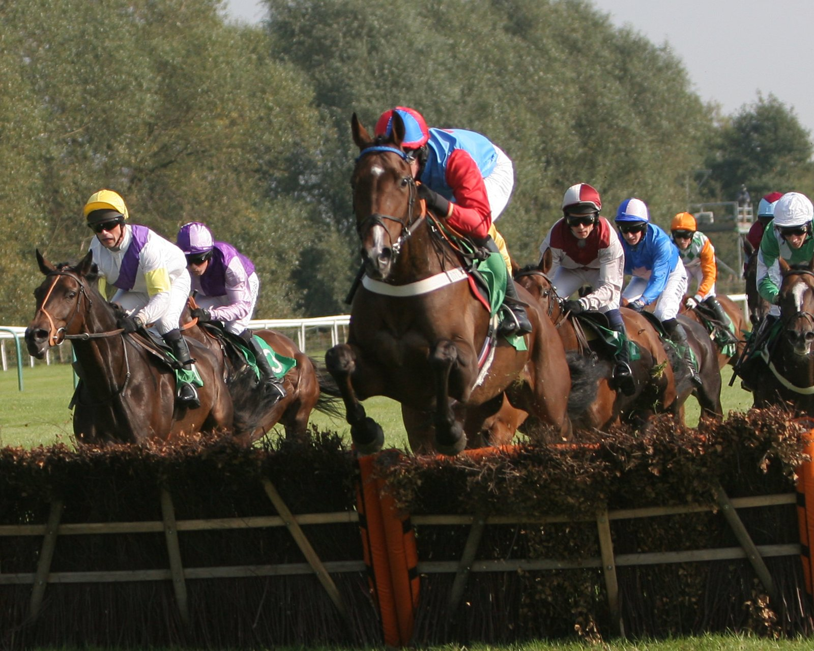

Almeraq caza a Paborus en los últimos metros y suma su tercer Grupo I del año en Ascot
Almeraq, montado por Tom Marquand, se impuso por un cuello a Paborus en el Qatar Racing British Champions Sprint Stakes de Ascot, sobre seis furlongs, y ya acumula tres victorias de Grupo I esta temporada.

Durante buena parte de la carrera, el protagonismo fue de Paborus. Salió bien del partidor y corrió en solitario, pegado a los palos interiores, mientras el resto del lote se desplazaba poco a poco por la pista hasta juntarse con él. Danny Tudhope lanzó el ataque camino del poste del último furlong y abrió un par de cuerpos sobre sus perseguidores.
Tom Marquand, mientras tanto, se abría paso entre caballos a lomos del favorito, que salió a 11/10. En cuanto Almeraq encontró hueco, la llegada cambió de dueño. Remató con fuerza, alcanzó a Paborus en los últimos metros y lo superó por un cuello.
La lectura es sencilla: el margen en la raya se queda corto, porque Almeraq tuvo que buscar salida entre el lote y aun así enjugó una ventaja de dos cuerpos.
El duelo tenía antecedente. En el Betfair Sprint Cup de Haydock, disputado en piso pesado, ambos habían llegado separados por cuatro cuerpos y cuarto. El terreno más rápido de Ascot se presentaba, sobre el papel de las apuestas, más favorable para Paborus, aunque Almeraq ya había ganado en piso rápido en el Royal Ascot.
Division entró tercero, a algo más de tres cuerpos, y Coppull completó la cuarta plaza.
Marquand valoró la regularidad del ganador en terrenos muy distintos: «Es el mejor de su categoría. Ha demostrado versatilidad todo el año: piso bueno a firme en Ascot, pesado en Haydock y de nuevo bueno aquí. En todas las ocasiones me ha transmitido la sensación de ser un auténtico caballo de Grupo I de primerísimo nivel, y supongo que para ganar tres Grupos I en un año en esta distancia tienes que serlo».
Por Martín Larrañeta